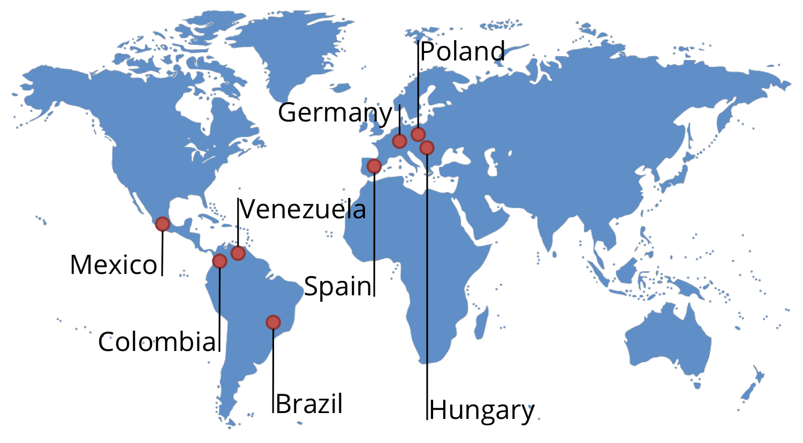
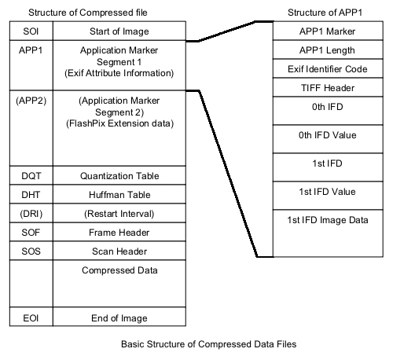
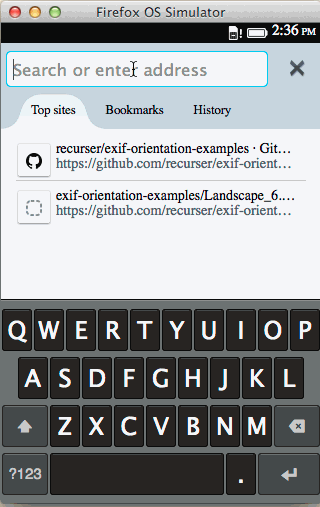
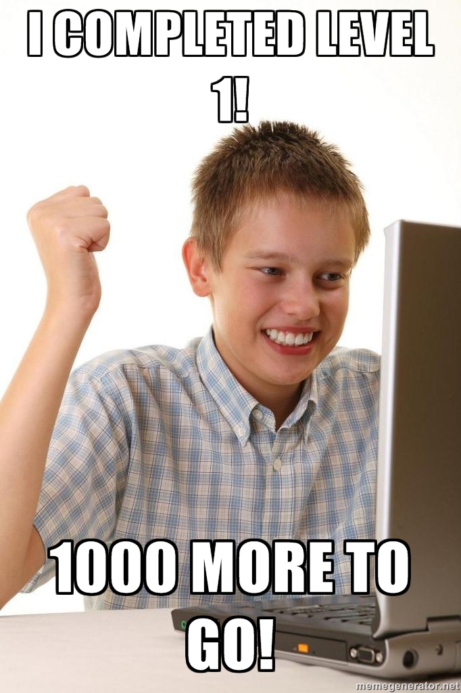
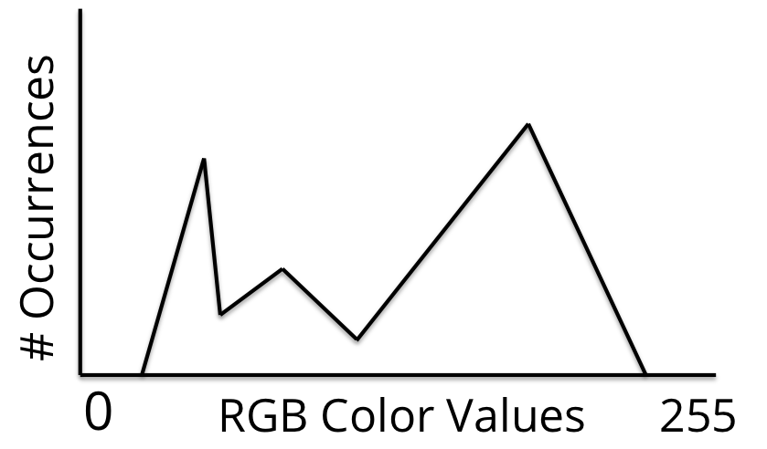
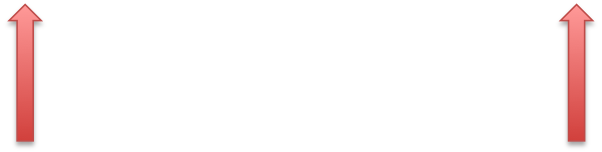
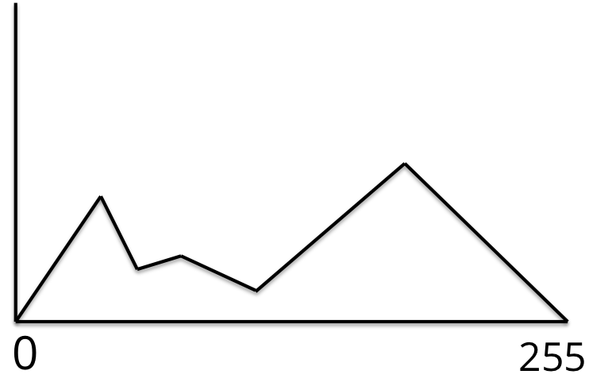
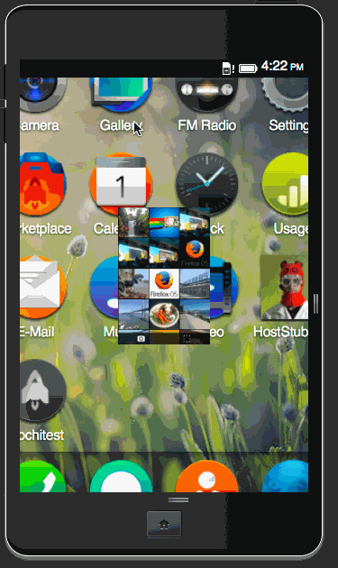

We make our values and principles real with four great pillars of activities. [...] and our real success comes when these activities all function well together.
- We build products,
- We empower communities,
- We teach and learn and
- We shape enviroments.


Source: EXIF Specification 4.5.4 Basic Structure of JPEG Compressed Data
var dv = new DataView(buffer);var vector_length = dv.getUint8(0);var width = dv.getUint16(1); // 0+uint8 = 1 bytes offsetvar height = dv.getUint32(3); // 0+uint8+uint32 = 3 bytes offset
| EXIF Code | Rotation | Mirroring (X-Axis) |
|---|---|---|
| 1 | 0° | false |
| 2 | 0° | true |
| 3 | 180° | false |
| ... | ... | ... |
| 8 | 270° | false |





The White Balance command automatically adjusts the colors of the active layer by stretching the Red, Green and Blue channels separately. To do this, it discards pixel colors at each end of the Red, Green and Blue histograms which are used by only 0.05% of the pixels in the image and stretches the remaining range as much as possible.

email: heroldtom@gmail.com
irc: therold in #ffos_media, #gaia